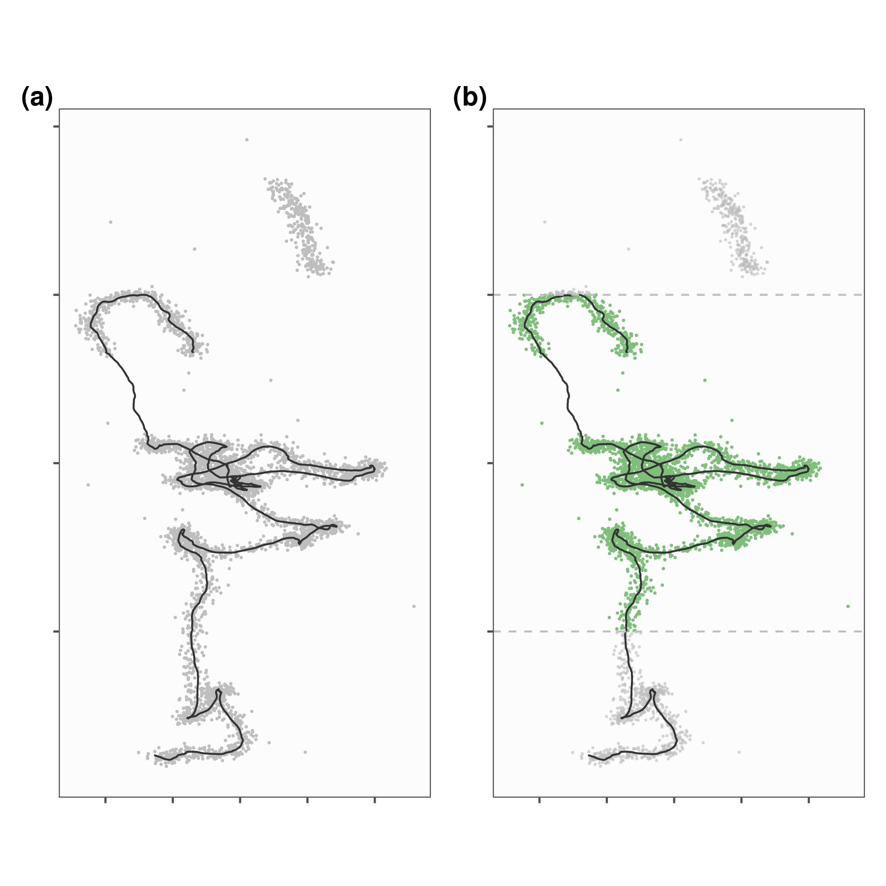
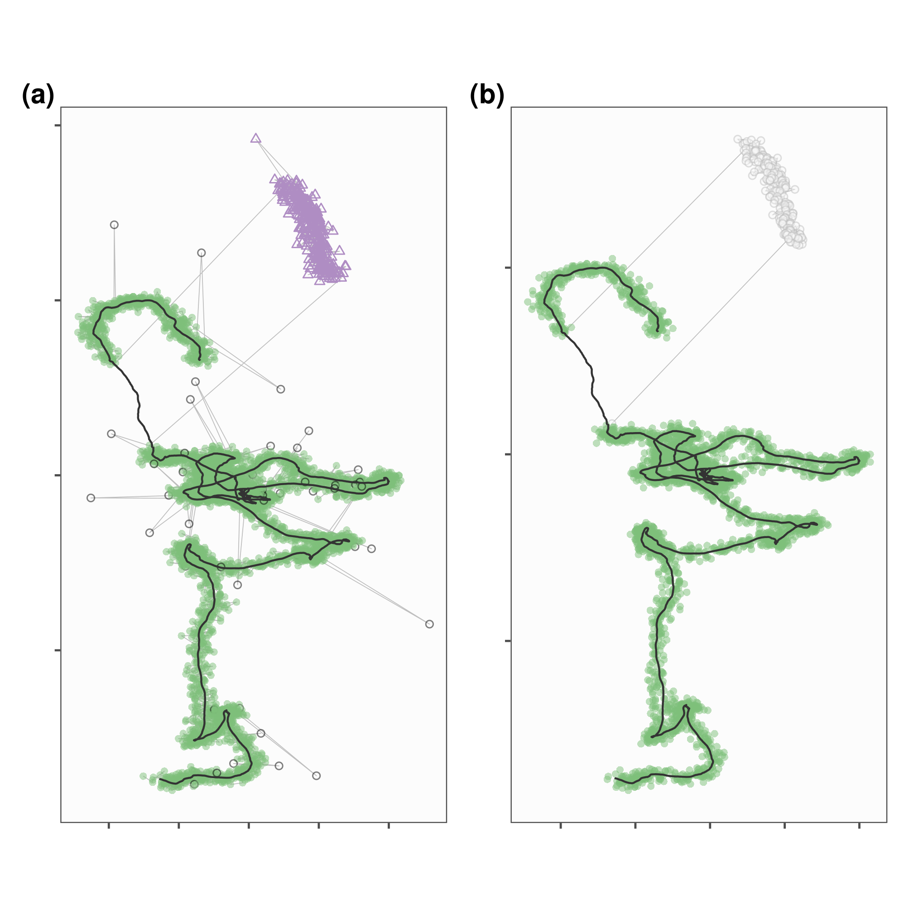

Section 3 Reducing Large-Scale Positioning Error by Filtering Data
3.1 Prepare Libraries
Here we load some useful libraries, and the helper functions.
3.2 Introducing Errors to the Data
Here we introduce three kinds of errors to the data:
Small-scale normally distributed errors at each position;
Large-scale error at a random 0.5% of positions;
A large-scale displacement of a sequence of 300 positions.
While the data are 10,000 positions at 1-second interval, we shall use only 5,000 of these.
We add outliers at random to the data to demonstrate their removal.
# make a copy
data_copy <- copy(data)
# add a prolonged spike or reflection to 300 positions
data_copy[500:800, `:=`(x = x + 0.25,
y = y + 0.25)]
# add normal error
data_copy[, `:=`(x = do_add_error(x, std_dev = 0.01),
y = do_add_error(y, std_dev = 0.005))]
# add 100 outliers
data_copy <- do_add_outliers(data_copy, p_data = 0.005, std_dev = 0.1)Save the data to which errors have been added.
Define a palette with 4 colours for convenience.
We make a figure of the canonical data (grey line) along with the artificially added error (grey points).
# make figure of canonical data with added errors
figure_raw <-
ggplot()+
geom_point(data = data_copy,
aes(x, y),
col = "grey",
alpha = 1,
size = 0.2)+
geom_path(data = data,
aes(x, y),
col = "grey20",
alpha = 1)+
ggthemes::theme_few()+
theme(axis.text = element_blank(),
axis.title = element_blank())+
coord_equal()+
labs(colour = NULL)3.3 Filtering by Spatial Bounds
Filtering by spatial bounds is a good way to begin reducing gross, large-scale positioning errors. There are two main ways of doing this:
Filtering by a bounding box: Compare the coordinates of observations against a range of acceptable coordinates, and retain those which fall within the range, or
Filtering by a spatial polygon: An explicit geometric intersection between the positions and a polygon representing an area of interest.
Here, we remove gross positioning errors using a bounding box filter using the function atl_filter_bounds. In this example, we show filtering only on the Y coordinate.
atl_filter_bounds takes coordinate ranges as two-element vectors of the lower and higher bound.
It is possible to pass one of the bounds as NA, in which case, only the other bound is used for filtering, i.e., y_range = c(NA, 1) is equivalent to selecting all Y coordinates < 1.
atl_filter_bounds was initially designed to remove positions inside a specific range, hence the argument remove_inside.
The default value of the argument is FALSE, and atl_filter_bounds is thus a bounding box filter.
# remove positions outside a bounding box
# NB: set remove_inside to FALSE
data_inside_bbox <- atl_filter_bounds(data = data_copy,
y_range = c(0.5, 1),
remove_inside = FALSE)atl_filter_bounds is not vectorised, and if there are two or more bounds per coordinate (for instance, \(X_1 \ldots X_2\), and \(X_3 \ldots X_4\)), they must be passed in two different function calls.
The same is true for filtering by an sf polygon. atl_filter_bounds also supports filtering by multi-polygon objects.
Having filtered the data we shall prepare it for plotting.
# plot data inside and outside bbox
fig_filter_bounds <-
ggplot()+
geom_point(data = data_inside_bbox,
aes(x, y),
col = pal[3],
alpha = 1, size = 0.2)+
geom_point(data = data_copy[!data_inside_bbox,
on = c("x", "y")],
aes(x, y),
col = "grey",
alpha = 0.5, size = 0.2)+
geom_path(data = data,
aes(x, y),
col = "grey20",
alpha = 1)+
geom_hline(yintercept = c(0.5, 1),
col = "grey",
lty = 2)+
ggthemes::theme_few()+
theme(axis.text = element_blank(),
axis.title = element_blank())+
theme(plot.background = element_rect(fill = NA))+
coord_equal(expand = T)
# wrap plots
plot_figure <-
wrap_plots(list(figure_raw, fig_filter_bounds)) +
plot_annotation(tag_levels = "a",
tag_prefix = "(",
tag_suffix = ")") &
theme(plot.tag = element_text(face = "bold"))
ggsave(plot_figure, filename = "figures/fig_raw_bounds.png",
width = 170, height = 170, units = "mm")
(a) A velocity-autocorrelated movement track simulated for 5,000 positions (black line) using the smoove package (Gurarie et al. 2017). Three kinds of errors have been artificially added: (1) each position (grey points) is offset from the canonical track with the addition of normally distributed small-scale error, (2) large-scale error has been added to 0.5% of positions, and (3) 300 positions (indices 500 – 800) have been displaced to the top-right of the track to simulate a gross distortion that affects a continuous subset of the track.
The goal of pre-processing such datasets is to get the estimated positions (grey points) to match the canonical track (solid black line) as closely as possible.
(b) Tracks can be quickly filtered by spatial bounds (\(0.5 \leq Y \leq 1.0\); dashed grey lines) using the atlastools function atl_filter_bounds. Setting the function argument remove_inside = FALSE retains positions within user supplied bounds (blue points), and excludes those outside (red points).
3.3.1 A Note on Filtering by Bounds
The filter on spatial bounds is only for demonstration, and is not applied to the data.
3.4 Filtering Unrealistic Movement
Large-scale positioning error can affect both point locations as well as entire subsets of a track, leading to a track appearing to show unrealistic movement for the study species (Bjørneraas et al. 2010).
The best way to examine whether a track contains such positioning errors is to plot the data, and especially to join the dots, i.e., to connect the positions with lines rather than simply plot points.
Users with extensive experience of their study system will readily recognise segments of a track where the movement appears to be unrealistic.
Briefly, the two main kinds of errors are mentioned here, and named based on their appearance in a tack: those that affect single positions lend a spiky appearance to a track, and are referred to as point outliers or spikes, while errors affecting continuous subsets of a track cause it to appear as though it has been reflected along a plane, and are hence called reflections, or prolonged spikes.
3.4.1 Filtering Point Outliers or Spikes
We begin by removing unrealistic movement in the form of point outliers, or spikes.
The first step is to determine how spikes should be identified. The non-movement approach prescribes determining whether movement metrics associated with each position are realistic or not, and targeting those positions where the movement metrics are unrealistic for the study species.
In this case we shall calculate only two metrics, speed and turning angle.
These are conveniently implemented in atlastools using the functions atl_get_speed and atl_turning_angle.
# get speed and turning angle
data_copy[, `:=`(in_speed = atl_get_speed(data_copy,
type = "in"),
out_speed = atl_get_speed(data_copy,
type = "out"),
angle = atl_turning_angle(data_copy))]Having calculated speed and turning angle, the next step is to remove positions with extremely high incoming and outgoing speeds. This means using the atl_filter_covariates function to remove positions with speed \(\geq\) a plausible speed threshold. The use of a turning angle filter is optional, and not necessary in this case.
One approach is to define a speed cutoff based on expert knowledge, and this is best suited to well studied species.
For simulated data, there is no plausible speed threshold from prior knowledge — a reasonable choice here is to use the 90^th or 95^th percentile of speed and turning angle (when this metric is used).
This is also more general than identifying the limits of implausibility for each individual (since there may be inter-individual differences), let alone each species in a large dataset.
# get 90 and 95 percentile of speed and turning angle
sapply(data_copy[, c("in_speed", "angle")], function(z) {
quantile(z, probs = c(0.9, 0.95), na.rm = TRUE)
})Finally, we shall remove positions whose incoming and outgoing speeds are both greater than the 95th speed percentile using atl_filter_covariates.
# filter the copy by the 95th percentile
data_filtered <- atl_filter_covariates(data_copy,
filters = c("(in_speed < 0.024 & out_speed < 0.024) | angle < 40"))We prepare the data for plotting.
# data plot
fig_outlier_remove <-
ggplot()+
geom_path(data = data_copy,
aes(x, y),
col = "grey",
lwd = 0.2)+
geom_point(data = data_copy[500:800, ],
aes(x, y),
size = 0.2,
shape = 2, col = pal[4])+
geom_point(data = data_copy[!data_copy[500:800, ],
on = c("x", "y")],
aes(x, y,
col = (in_speed >= 0.03 & out_speed >= 0.03),
shape = (in_speed >= 0.03 & out_speed >= 0.03)),
show.legend = F,
alpha = 0.5)+
geom_path(data = data,
aes(x, y),
col = "grey20",
alpha = 1)+
ggthemes::theme_few()+
theme(axis.text = element_blank(),
axis.title = element_blank())+
scale_color_manual(values = c(pal[3], "black"))+
scale_shape_manual(values = c(16, 21))+
coord_equal()+
theme(plot.background = element_rect(fill = NA))3.4.2 Filtering Reflections or Track Subsets
When entire track subsets are affected by positioning error, they are more difficult to remove. This is the case when positions are reflected along a plane in the coordinate axis — the simplest way in which this can be explained is to examine the way in which we simulated the reflection earlier in this text, by simply adding an offset to the X and Y coordinates of each of 300 consecutive positions (indices 500 – 800).
An explanation of why these reflections occur is found in WATLAS PAPER: Bijleveld et al. in prep. In short, they are results of an error in the ATLAS localisation algorithm, and are usually removed in the localisation step’s quality control procedures. However, some reflections may remain to confront users.
Reflections and other issues affecting track subsets cannot be resolved by targeting single positions, since there are rarely any position-specific covariates that can be used to identify a position as part of a larger subset that should be removed.
However, it is often possible to identify the bounds of problematic subsets, such as reflections, and remove positions between them. The way this is done is conceptually similar to the point outlier algorithm.
The atl_remove_reflection function implements one method remove reflected subsets of a track. The working is described:
Remove point outliers,
Re-calculate speed and turning angles
Identify the first unrealistic movement position (fast speed and high turning angle)
Setting this point as an anchor, identify the next position with unrealistic movement (as above)
Remove all positions between these two points,
Search for the next unrealistic movement, and repeat the process.
This is a minimal algorithm which can be developed further, and iterated multiple times to comprehensively remove reflections.
One important function argument is the estimated reflection length, i.e., how many positions are estimated to be reflected. This argument controls how many positions after the anchor are candidates for the reflection’s end.
If the reflection does not end within this number of positions, the algorithm goes awry, and considers part of the reflection to be the valid data. Fortunately, this can be avoided by setting the length to the number of observations in the data.
However, if the reflection does not end at all, the algorithm will simply delete all positions from the anchor point onwards.
Thus, the algorithm is less of a double-edged sword and more a sword with no hilt — there are few safe ways to use it.
The difficulty in implementing a reasonable algorithm for dealing with this kind of track-subset wide positioning error reveals the general problem that algorithms are not easy to conceptualise or efficiently implement.
# attempt to remove reflections
data_no_reflection <- atl_remove_reflections(data_filtered,
point_angle_cutoff = 10,
reflection_speed_cutoff = 0.024)
# get reflections
reflection <- data_filtered[!data_no_reflection,
on = c("x", "y")]
reflection <- na.omit(reflection)# get plots
fig_reflection <-
ggplot()+
geom_path(data = reflection,
aes(x, y),
alpha = 1,
col = "grey",
lwd = 0.2)+
geom_point(data = reflection,
aes(x, y),
alpha = 0.5,
col = "grey40",
fill = "grey",
shape = 21)+
geom_point(data = data_no_reflection,
aes(x, y),
alpha = 0.5,
colour = pal[3],
shape = 16,
show.legend = F)+
geom_path(data = data,
aes(x, y),
col = "grey20",
alpha = 1)+
ggthemes::theme_few()+
theme(axis.text = element_blank(),
axis.title = element_blank())+
coord_equal()+
theme(plot.background = element_rect(fill = NA))
# wrap figures
plot_figure <- wrap_plots(list(fig_outlier_remove,
fig_reflection)) +
plot_annotation(tag_levels = "a",
tag_prefix = "(",
tag_suffix = ")") &
theme(plot.tag = element_text(face = "bold"))
ggsave(plot_figure, filename = "figures/fig_correct_tracks.png",
width = 170, height = 170, units = "mm")
Reducing large-scale positioning error in a movement track. (a) Positioning error may affect single observations resulting in point outliers or ‘spikes’ (red points), but it may also affect continuous susbets of a track, which we call a prolonged spike' (purple triangles). While the former may be targeted by filtering on appropriate covariates such as speed and turning angle using theatlastoolsfunctionatl_filter_covariates, the latter cannot be effectively corrected by targeting each coordinate pair in isolation. **(b)** Theatlastoolsfunctionatl_remove_reflections` to identify prolonged spikes (red triangles) in tracking data is an illustrative example of targeting positioning errors that affect track subsets. While this method returns the canonical track without the prolonged spike (blue points) in this example, users are cautioned to frequently check this and similar semi-supervised algorithms’ results.
Finally, we export the data without spikes and reflections to be used later.
References
Bjørneraas, Kari, Bram Van Moorter, Christer Moe Rolandsen, and Ivar Herfindal. 2010. “Screening Global Positioning System Location Data for Errors Using Animal Movement Characteristics.” The Journal of Wildlife Management 74 (6): 1361–6. https://doi.org/10.1111/j.1937-2817.2010.tb01258.x.